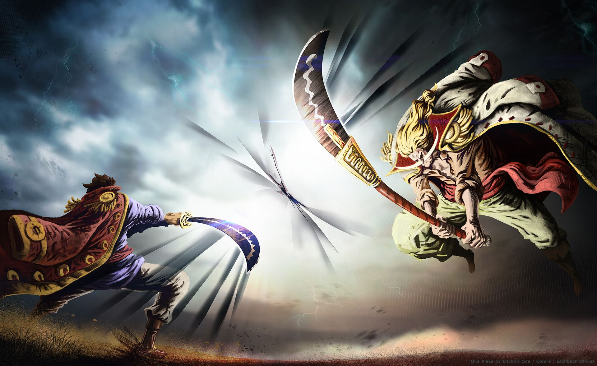
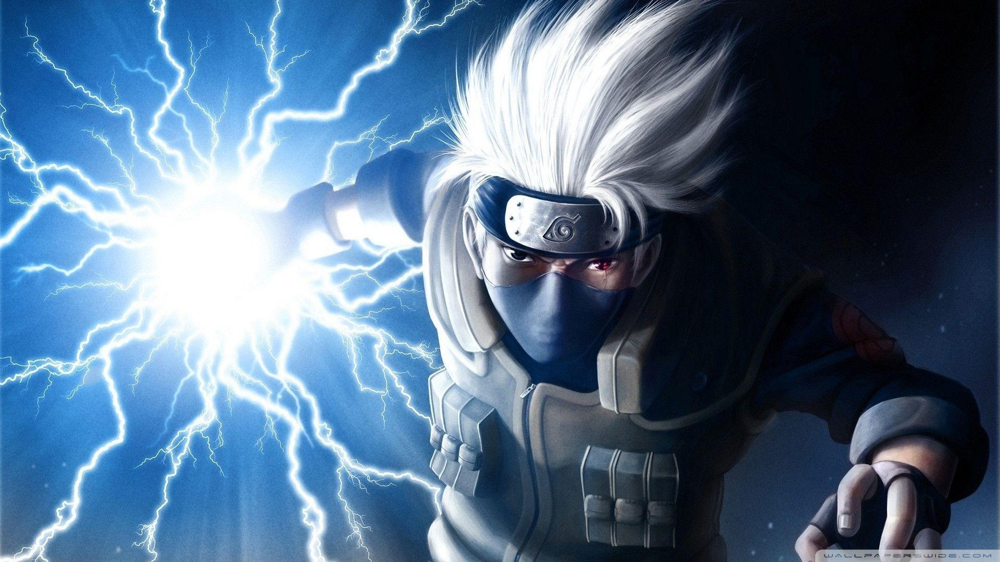

Legendary Battle
The legedary battle between Roger Pairates vs Whitebeard Pairates Takes Place Somewhere in Newworld

Asta Reunion
Black Clover has made a major change to Asta's Devil Union mode with the final moments of the newest chapter!

Kakashi The Copy Ninja
Kakashi was known as the copy ninja because he could literally copy every ninjutsu used in front of him. Which is the reason why he had a vast skillset. You ... Kakshi became well known throughout the Ninja world .